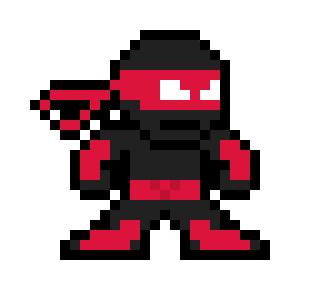
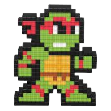

Meet the Nanonauts
We are the Nanonauts.
Our names are Holly, Dervla, Daniel, and Sam.

Daniel - Singer extraordinaire

Daniel is the Nanonauts' singer. He likes to sing all the time not just when he's playing with the Nanonauts! His mum and dad say he learned to sing before he learned to talk!
Daniel also plays clarinet and is learning the alto saxophone.
Sam - One-man rhythm section

Sam had music in his blood from the day he was born. Both his mum and dad play instruments and got him his frist drum kit when he was only five years old, which led to trouble with the neighbours. On some songs he plays the bass guitar and on some songs the drums. Sam loves playing in the Nanonauts but hates carrying his drumkit around.
Holly - If it's got strings, she'll play it

Acoustic guitar? Electric lead guitar? Ukelele? Harp? Helen can play them all. She started off by making homemade guitars from cardboard boxes and elastic bands till her uncle took pity on her and bought her a Spanish guitar for Christmas. After a few lessons at school she was flying!
Dervla - Keyboard maestro

Dervla has Grade 4 piano but in secret prefers to play electronic keyboards. She loves synthesizer sounds and arguing with Holly over who should play the basslines.